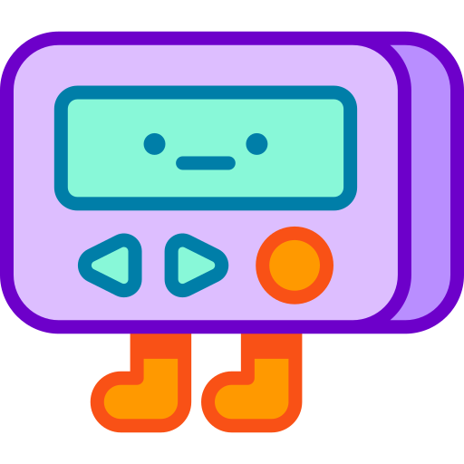
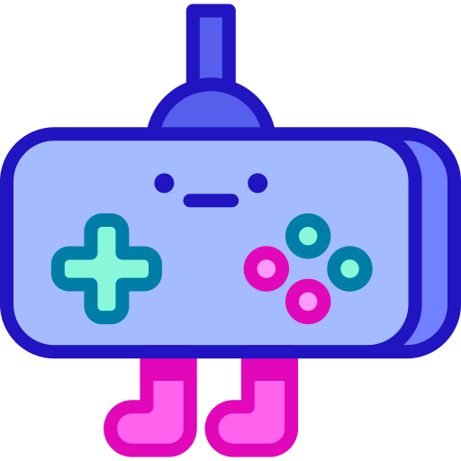

 Introduction
Our group has recreated the age old classic game TIC-TAC-TOE, which is bound to bring back the memories of boring lessons back in school. Our webpage includes the history of the game and how it grew to be the game as we know it today. It also includes basic instructions for first time players. This game will be user vs. computer. Hope you win!
 Brief Histroy and the Game Today
TIC-TAC-TOE is an ancient game that billions of people have played over the course of history. While some experts believe the game dates back to the ancient Egyptians, others believe it evolved from an ancient Roman game called Terni Lapilli.
Terni Lapilli was played on a similar three-by-three grid. In fact, these grids can be found scratched onto all sorts of surfaces around ancient Rome. However, no markings have ever been found within the grids, leading historians to believe the game was played with movable pieces rather than by making markings, such as Xs and Os.
Experts believe the name tic-tac-toe came about sometime in the 1800s. That's when a popular game called either "ticktack" or "tic-tac-toe" was played by blindly throwing a pencil at a slate marked with numbers. Your score was tallied by counting the numbers hit with the pencil. This game is no longer played today, but its name survives nonetheless. Historians believe the name derived from the sound the pencil made when it hit the slate.
The modern game we know as tic-tac-toe is played on a nine-square grid created by drawing lines to create three horizontal rows and three vertical columns. With X going first, players alternate marking the squares with Xs and Os, trying to achieve three marks in a row either horizontally, vertically, or diagonally.
 How To Play
How To Play
- The game is played on a grid that's 3 squares by 3 squares.
- You are X, your friend (or the computer in this case) is O. Players take turns putting their marks in empty squares.
- The first player to get 3 of her marks in a row (up, down, across, or diagonally) is the winner.
- When all 9 squares are full, the game is over. If no player has 3 marks in a row, the game ends in a tie.